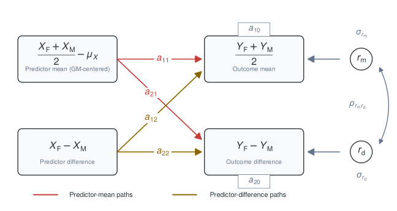
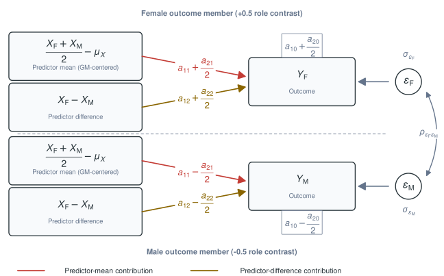
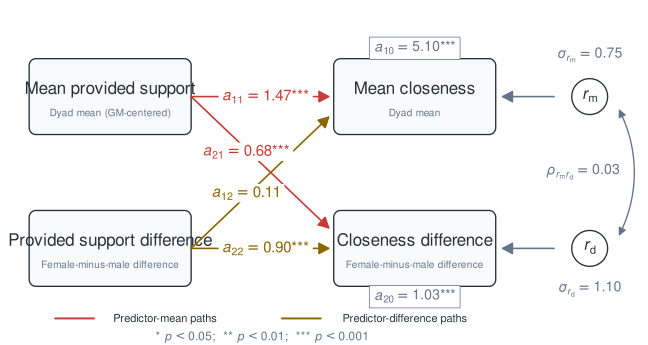

library(dyadMLM)
has_glmmTMB <- requireNamespace("glmmTMB", quietly = TRUE)
#> Warning in check_dep_version(dep_pkg = "TMB"): package version mismatch:
#> glmmTMB was built with TMB package version 1.9.21
#> Current TMB package version is 1.9.23
#> Please re-install glmmTMB from source or restore original 'TMB' package (see '?reinstalling' for more information)
dsm_fitted_alt <- "Fitted DSM diagram unavailable."This vignette focuses on the Dyadic Score Model (DSM) for distinguishable dyads and its relationship to the distinguishable Actor-Partner Interdependence Model (APIM). The DSM expresses associations in terms of the dyad’s shared level and the directional difference between partners (Iida et al. 2018).
For the broader package workflow and an overview of the available model-specific vignettes, including the Actor-Partner Interdependence Model and Dyad-Individual Model, see the online package overview.
Preparing DSM Data
A DSM requires an explicitly declared direction. This direction
should be substantively meaningful when the directional coefficients are
interpreted. Here, c("female", "male") defines every
difference as female minus male.
Throughout this cross-sectional example, and denote provided support after subtracting the same pooled grand mean across all members in the analysis sample. Raw scores could instead be used if zero is meaningful for that variable in the analysis sample; this would change the intercept reference point, but not the slope estimates.
cross_dsm_data <- dyadMLM::prepare_dyad_data(
dyads_cross,
dyad = coupleID,
member = personID,
role = gender,
predictors = provided_support,
model_types = "dsm",
# All three observed compositions in `dyads_cross` are detected and retained by
# default. This example focuses on `female-male` dyads, so we restrict the
# analysis here.
keep_compositions = "female-male",
dsm_role_order = c("female", "male")
)
print(cross_dsm_data, n = 4)
#> # dyadMLM data
#> # Rows: 240 | Dyads: 120 | Intensive longitudinal: no
#> # Structure: dyad = coupleID, member = personID, role = gender
#> # DSM direction: female - male
#> #
#> # Dyad compositions:
#> # female_x_male distinguishable 120 dyads
#> #
#> # Added columns:
#> # .dy_composition inferred dyad composition
#> # .dy_composition_role composition-specific member role
#> # .dy_is_{role} composition-role indicator columns
#> # .dy_dsm_role_contrast DSM role contrast: +0.5 for the first declared
#> # role and -0.5 for the second declared role
#> # .dy_{pred}_dyad_mean_gmc dyad-mean predictor: dyad's average predictor
#> # level, grand-mean centered
#> # .dy_{pred}_within_dyad_diff DSM signed predictor difference: first
#> # declared role minus second declared role
#> #
#> # A tibble: 240 × 13
#> personID coupleID gender dyad_composition closeness provided_support
#> <int> <int> <fct> <fct> <dbl> <dbl>
#> 1 1 1 female female_x_male 4.77 4.49
#> 2 2 1 male female_x_male 4.46 4.76
#> 3 3 2 female female_x_male 6.44 4.09
#> 4 4 2 male female_x_male 5.99 6.20
#> # ℹ 236 more rows
#> # ℹ 7 more variables: .dy_composition <fct>, .dy_composition_role <fct>,
#> # .dy_is_female <dbl>, .dy_is_male <dbl>, .dy_dsm_role_contrast <dbl>,
#> # .dy_provided_support_dyad_mean_gmc <dbl>,
#> # .dy_provided_support_within_dyad_diff <dbl>With this notation, dyadMLM creates the equivalent
coordinates:
.dy_provided_support_dyad_mean_gmc.dy_provided_support_within_dyad_diff.dy_dsm_role_contrastfor female and for male.
The function obtains the first coordinate by grand-mean centering the dyad means calculated from the original scores. The common centering shift cancels from the signed difference. Both coordinates are repeated on the member rows; the outcome remains unchanged and needs no transformation.
Cross-Sectional Gaussian DSM
For a cross-sectional Gaussian DSM, a correlated dyad random intercept and role-contrast slope represent unexplained outcome-level and outcome-difference variation.

Conceptual cross-sectional DSM. Predictor mean and predictor difference each predict both outcome scores.
The same model can be displayed in the individual-member rows used by the long-format multilevel model.

Individual-level representation of the cross-sectional DSM used for the long-format multilevel model. The centered predictor mean and female-minus-male predictor difference appear on both member rows. For the female outcome, the intercept and slopes add one-half of the corresponding outcome-difference parameters. For the male outcome, they subtract one-half. The female and male residuals may have different variances and covary.
The path labels correspond directly to the terms in the model below:
dsm_model <- glmmTMB::glmmTMB(
closeness ~
# Outcome-level intercept
1 +
# Predictor level -> outcome level (a11)
.dy_provided_support_dyad_mean_gmc +
# Predictor difference -> outcome level (a12)
.dy_provided_support_within_dyad_diff +
# Outcome-difference intercept (a20)
.dy_dsm_role_contrast +
# Predictor level -> outcome difference (a21)
.dy_provided_support_dyad_mean_gmc:.dy_dsm_role_contrast +
# Predictor difference -> outcome difference (a22)
.dy_provided_support_within_dyad_diff:.dy_dsm_role_contrast +
# Outcome-level and outcome-difference residual variances and their covariance
us(1 + .dy_dsm_role_contrast | coupleID),
dispformula = ~ 0,
family = gaussian(),
data = cross_dsm_data
)
summary(dsm_model)
#> Family: gaussian ( identity )
#> Formula:
#> closeness ~ 1 + .dy_provided_support_dyad_mean_gmc + .dy_provided_support_within_dyad_diff +
#> .dy_dsm_role_contrast + .dy_provided_support_dyad_mean_gmc:.dy_dsm_role_contrast +
#> .dy_provided_support_within_dyad_diff:.dy_dsm_role_contrast +
#> us(1 + .dy_dsm_role_contrast | coupleID)
#> Dispersion: ~0
#> Data: cross_dsm_data
#>
#> AIC BIC logLik -2*log(L) df.resid
#> 615.1 646.5 -298.6 597.1 231
#>
#> Random effects:
#>
#> Conditional model:
#> Groups Name Variance Std.Dev. Corr
#> coupleID (Intercept) 0.5085 0.7131
#> .dy_dsm_role_contrast 0.9773 0.9886 0.02
#> Number of obs: 240, groups: coupleID, 120
#>
#> Conditional model:
#> Estimate Std. Error
#> (Intercept) 5.07753 0.06691
#> .dy_provided_support_dyad_mean_gmc 1.46596 0.09224
#> .dy_provided_support_within_dyad_diff 0.10107 0.07577
#> .dy_dsm_role_contrast 1.01425 0.09277
#> .dy_provided_support_dyad_mean_gmc:.dy_dsm_role_contrast 0.71929 0.12788
#> .dy_provided_support_within_dyad_diff:.dy_dsm_role_contrast 0.92366 0.10505
#> z value Pr(>|z|)
#> (Intercept) 75.88 < 2e-16
#> .dy_provided_support_dyad_mean_gmc 15.89 < 2e-16
#> .dy_provided_support_within_dyad_diff 1.33 0.182
#> .dy_dsm_role_contrast 10.93 < 2e-16
#> .dy_provided_support_dyad_mean_gmc:.dy_dsm_role_contrast 5.62 1.86e-08
#> .dy_provided_support_within_dyad_diff:.dy_dsm_role_contrast 8.79 < 2e-16
#>
#> (Intercept) ***
#> .dy_provided_support_dyad_mean_gmc ***
#> .dy_provided_support_within_dyad_diff
#> .dy_dsm_role_contrast ***
#> .dy_provided_support_dyad_mean_gmc:.dy_dsm_role_contrast ***
#> .dy_provided_support_within_dyad_diff:.dy_dsm_role_contrast ***
#> ---
#> Signif. codes: 0 '***' 0.001 '**' 0.01 '*' 0.05 '.' 0.1 ' ' 1Interpreting the DSM paths
For the outcomes given the predictors, the long-format model estimates the same paths as the conventional score-based DSM (Iida et al. 2018).
In the conventional score-based representation, the predictors are decomposed in the same way:
Here the two member predictors already share the pooled grand-mean reference, so is grand-mean centered and the common shift cancels from .
The outcomes are also decomposed:
The long-format model fitted here does not create and as observed variables. Instead, it uses the member-level outcome directly. With complete outcome pairs, this is an equivalent parameterization of the same conditional outcome regressions.
Consider the conceptual SEM formulas:
The fitted paths for this example are:

Fitted cross-sectional DSM for the example data. The nodes identify the mean and difference scores; edge and intercept labels show the estimated DSM coefficients, and the residual labels show the estimated score-component standard deviations and correlation.
The fixed effects from our MLM model map directly to these paths as such:
| Long-format fixed effect | DSM SEM path and interpretation |
|---|---|
| Intercept | : expected dyad-average closeness at the sample-average provided-support level and no female-male support difference |
| Provided-support dyad mean | : predictor level outcome level |
| Provided-support difference | : predictor difference outcome level |
| DSM role contrast | : expected female-minus-male outcome difference at the predictor reference values |
| Dyad mean role contrast | : predictor level outcome difference |
| Provided-support difference role contrast | : predictor difference outcome difference |
Thus, for example, is the change in dyad-average closeness associated with a one-unit larger female-minus-male provided-support difference, holding support level constant. In contrast, is the change in the female-minus-male closeness difference associated with that same one-unit larger support difference, holding support level constant. The and coefficients are the DSM cross-paths. They are omitted from the reduced DSM but are needed for the full model.
The random intercept variance is unexplained variation in outcome level, and the random role-contrast slope variance is unexplained variation in the full directional outcome difference. Their covariance indicates whether unexplained outcome level and unexplained outcome difference are associated.
The curved arrow is the scale-free correlation between the outcome-mean residual and the outcome-difference residual. It is not the female-male residual correlation from the APIM.
The DSM uses the full female-minus-male difference:
Therefore, this relationship applies:
For this reason, a nonzero indicates that the two roles have different residual variances. The remaining covariance between the partners’ residuals is
Reversing the coding
Instead of computing , we can reverse the direction and compute . This changes the direction of the differences, but not the substantive model.
cross_dsm_data_inverted <- dyadMLM::prepare_dyad_data(
dyads_cross,
dyad = coupleID,
member = personID,
role = gender,
predictors = provided_support,
# Request APIM columns too for comparison below.
model_types = c("dsm", "apim"),
keep_compositions = "female-male",
dsm_role_order = c("male", "female")
)
provided_support_grand_mean <- mean(
c(
cross_dsm_data_inverted$.dy_provided_support_actor,
cross_dsm_data_inverted$.dy_provided_support_partner
),
na.rm = TRUE
)
# Use one pooled centering constant for both APIM predictor columns.
cross_dsm_data_inverted$.dy_provided_support_actor <-
cross_dsm_data_inverted$.dy_provided_support_actor -
provided_support_grand_mean
cross_dsm_data_inverted$.dy_provided_support_partner <-
cross_dsm_data_inverted$.dy_provided_support_partner -
provided_support_grand_mean
dsm_model_inverted <- glmmTMB::glmmTMB(
closeness ~
.dy_provided_support_dyad_mean_gmc +
.dy_provided_support_within_dyad_diff +
.dy_dsm_role_contrast +
.dy_provided_support_dyad_mean_gmc:.dy_dsm_role_contrast +
.dy_provided_support_within_dyad_diff:.dy_dsm_role_contrast +
us(1 + .dy_dsm_role_contrast | coupleID),
dispformula = ~ 0,
family = gaussian(),
data = cross_dsm_data_inverted
)
female_minus_male <- glmmTMB::fixef(dsm_model)$cond
male_minus_female <- glmmTMB::fixef(dsm_model_inverted)$cond
knitr::kable(
data.frame(
`model term` = names(female_minus_male),
`female - male` = unname(female_minus_male),
`male - female` = unname(male_minus_female),
check.names = FALSE
),
digits = 3,
align = c("l", "r", "r")
)| model term | female - male | male - female |
|---|---|---|
| (Intercept) | 5.078 | 5.078 |
| .dy_provided_support_dyad_mean_gmc | 1.466 | 1.466 |
| .dy_provided_support_within_dyad_diff | 0.101 | -0.101 |
| .dy_dsm_role_contrast | 1.014 | -1.014 |
| .dy_provided_support_dyad_mean_gmc:.dy_dsm_role_contrast | 0.719 | -0.719 |
| .dy_provided_support_within_dyad_diff:.dy_dsm_role_contrast | 0.924 | 0.924 |
The two models have identical fitted values and model fit:
.dy_provided_support_within_dyad_diffreverses because the predictor difference reverses..dy_dsm_role_contrastreverses because the represented outcome difference reverses..dy_provided_support_dyad_mean_gmc:.dy_dsm_role_contrastreverses because only the outcome difference reverses..dy_provided_support_within_dyad_diff:.dy_dsm_role_contrastremains unchanged because both differences reverse.
The intercept and .dy_provided_support_dyad_mean_gmc
also remain unchanged. For the random effects, the variances of
(Intercept) and .dy_dsm_role_contrast remain
unchanged, whereas their covariance reverses sign.
Relationship to the APIM and DIM
For distinguishable dyads, the full DSM and an unconstrained distinguishable APIM are alternative parameterizations of the same fixed associations (Iida et al. 2018).
Let’s fit the equivalent distinguishable APIM:
apim_model <- glmmTMB::glmmTMB(
closeness ~
# Role-specific intercepts
0 +
.dy_is_female +
.dy_is_male +
# Role-specific actor effects
.dy_is_female:.dy_provided_support_actor +
.dy_is_male:.dy_provided_support_actor +
# Role-specific partner effects
.dy_is_female:.dy_provided_support_partner +
.dy_is_male:.dy_provided_support_partner +
# Role-specific Gaussian residual covariance structure
us(0 +
.dy_is_female +
.dy_is_male
| coupleID),
dispformula = ~ 0,
family = gaussian(),
data = cross_dsm_data_inverted
)The two DSM directions and the APIM have identical fit statistics:
data.frame(
model = c("DSM: female - male", "DSM: male - female", "APIM"),
AIC = round(c(AIC(dsm_model), AIC(dsm_model_inverted), AIC(apim_model)), 3),
BIC = round(c(BIC(dsm_model), BIC(dsm_model_inverted), BIC(apim_model)), 3),
logLik = round(c(
as.numeric(logLik(dsm_model)),
as.numeric(logLik(dsm_model_inverted)),
as.numeric(logLik(apim_model))
), 3)
)
#> model AIC BIC logLik
#> 1 DSM: female - male 615.134 646.46 -298.567
#> 2 DSM: male - female 615.134 646.46 -298.567
#> 3 APIM 615.134 646.46 -298.567Fixed-effect transformation
Let and denote the actor effects on the female and male outcomes. The corresponding partner effects are and , and the APIM intercepts are and . Fixed APIM coefficients use and write out their effect and outcome role. The numbered paths through retain the published DSM notation.
The slope transformation can be understood in two steps. First, for each outcome role , form the actor-plus-partner and actor-minus-partner combinations:
The DSM slopes then follow by combining the female- and male-outcome effects:
Grand-mean centering both APIM predictor columns with the same pooled constant aligns their zero point with the DSM predictor mean. The intercepts therefore transform as
With raw APIM predictors, the slope transformations would be unchanged, but the intercept transformation would additionally need to account for the different zero point.
For the reverse slope transformation, first recover the role-specific actor-plus-partner and actor-minus-partner combinations:
Then, for each outcome role ,
The intercepts transform back as
The following comparison applies the APIM-to-DSM transformation to all six fixed effects:
| DSM path | From APIM transformation | From DSM model |
|---|---|---|
| a10 | 5.078 | 5.078 |
| a11 | 1.466 | 1.466 |
| a12 | 0.101 | 0.101 |
| a20 | 1.014 | 1.014 |
| a21 | 0.719 | 0.719 |
| a22 | 0.924 | 0.924 |
Random-effect transformation
Let and be the APIM random effects for the female and male outcomes. The DSM outcome-level and outcome-difference residuals are the same random effects expressed in different coordinates:
Applying this rotation to the APIM covariance matrix reproduces the DSM random intercept variance, intercept-slope covariance, and role-slope variance:
apim_vcov <- as.matrix(glmmTMB::VarCorr(apim_model)$cond$coupleID)
dsm_vcov <- as.matrix(glmmTMB::VarCorr(dsm_model)$cond$coupleID)
rotation <- rbind(
outcome_level = c(0.5, 0.5),
outcome_difference = c(1, -1)
)
apim_to_dsm_vcov <- rotation %*% apim_vcov %*% t(rotation)
data.frame(
parameter = c(
"Var(outcome mean)",
"Cov(outcome mean, outcome diff)",
"Var(outcome diff)"
),
from_DSM = round(c(
dsm_vcov[1, 1],
dsm_vcov[1, 2],
dsm_vcov[2, 2]
), 3),
from_APIM_transformation = round(c(
apim_to_dsm_vcov[1, 1],
apim_to_dsm_vcov[1, 2],
apim_to_dsm_vcov[2, 2]
), 3)
)
#> parameter from_DSM from_APIM_transformation
#> 1 Var(outcome mean) 0.508 0.508
#> 2 Cov(outcome mean, outcome diff) 0.013 0.013
#> 3 Var(outcome diff) 0.977 0.977For exchangeable dyads, the direction of a member difference is
arbitrary. The directional intercept, both cross-paths, and the
covariance between outcome level and outcome difference must then be
zero. The remaining reduced, label-invariant DSM is algebraically the
Gaussian Dyad-Individual Model (DIM). In dyadMLM, use
model_types = "dim" for this exchangeable model and reserve
model_types = "dsm" for distinguishable dyads.
Because the Gaussian DIM is the exchangeability-constrained version of the full DSM, exchangeability can also be tested by comparing these nested models. This is equivalent to the comparison shown in Testing distinguishability in the APIM vignette.
Intensive longitudinal DSM
The intensive longitudinal DSM extends the cross-sectional DSM using the same temporal decomposition and multilevel workflow shown for the intensive longitudinal DIM. The DSM retains the directional mean-and-difference parameterization described above. For more detail on centering decisions and mean-and-deviation interpretation, refer to the DIM vignette. For dynamic models and their cautions, see the dynamic ILD APIM example.
Brief example of ILD DSM:
ild_dsm_data <- dyadMLM::prepare_dyad_data(
dyads_ild,
dyad = coupleID,
member = personID,
role = gender,
time = diaryday,
predictors = provided_support,
model_types = "dsm",
keep_compositions = "female-male",
dsm_role_order = c("female", "male")
)
print(ild_dsm_data, n = 4)
#> # dyadMLM data
#> # Rows: 3360 | Dyads: 120 | Intensive longitudinal: yes
#> # Structure: dyad = coupleID, member = personID, role = gender, time = diaryday
#> # DSM direction: female - male
#> #
#> # Dyad compositions:
#> # female_x_male distinguishable 120 dyads
#> #
#> # Added columns:
#> # .dy_composition inferred dyad composition
#> # .dy_composition_role composition-specific member role
#> # .dy_is_{role} composition-role indicator columns
#> # .dy_{pred}_cwp within-person predictor: momentary
#> # deviations from each person's usual level
#> # .dy_{pred}_cbp between-person predictor: stable
#> # differences from the average person's
#> # usual level
#> # .dy_dsm_role_contrast DSM role contrast: +0.5 for the first
#> # declared role and -0.5 for the second
#> # declared role
#> # .dy_{pred}_dyad_mean_gmc dyad-mean predictor: dyad's average
#> # predictor level, grand-mean centered
#> # .dy_{pred}_within_dyad_diff DSM signed predictor difference: first
#> # declared role minus second declared role
#> # .dy_{pred}_cwp_dyad_mean within-person dyad-mean predictor: shared
#> # momentary deviations in the dyad
#> # .dy_{pred}_cwp_within_dyad_diff DSM within-person signed predictor
#> # difference: first declared role minus
#> # second declared role
#> # .dy_{pred}_cbp_dyad_mean between-person dyad-mean predictor: dyad's
#> # stable usual level, grand-mean centered
#> # .dy_{pred}_cbp_within_dyad_diff DSM between-person signed predictor
#> # difference: first declared role minus
#> # second declared role
#> #
#> # A tibble: 3,360 × 20
#> personID coupleID diaryday gender dyad_composition closeness provided_support
#> <int> <int> <int> <fct> <fct> <dbl> <dbl>
#> 1 1 1 0 female female_x_male 4.40 4.93
#> 2 2 1 0 male female_x_male 5.14 5.59
#> 3 1 1 1 female female_x_male 5.16 4.89
#> 4 2 1 1 male female_x_male 5.70 5.18
#> # ℹ 3,356 more rows
#> # ℹ 13 more variables: .dy_composition <fct>, .dy_composition_role <fct>,
#> # .dy_is_female <dbl>, .dy_is_male <dbl>, .dy_provided_support_cwp <dbl>,
#> # .dy_provided_support_cbp <dbl>, .dy_dsm_role_contrast <dbl>,
#> # .dy_provided_support_dyad_mean_gmc <dbl>,
#> # .dy_provided_support_cwp_dyad_mean <dbl>,
#> # .dy_provided_support_cbp_dyad_mean <dbl>, …The example below estimates same-day associations between support and
closeness and includes diaryday to allow separate linear
trends for the outcome level and the female-minus-male outcome
difference.
dsm_ILD <- glmmTMB::glmmTMB(
closeness ~
# Outcome-level intercept and linear time trend
1 +
diaryday +
# Within-person predictor level -> outcome level
.dy_provided_support_cwp_dyad_mean +
# Within-person predictor difference -> outcome level
.dy_provided_support_cwp_within_dyad_diff +
# Between-person predictor level -> outcome level
.dy_provided_support_cbp_dyad_mean +
# Between-person predictor difference -> outcome level
.dy_provided_support_cbp_within_dyad_diff +
# Outcome-difference intercept and linear time trend
.dy_dsm_role_contrast +
diaryday:.dy_dsm_role_contrast +
# Within-person predictor level and difference -> outcome difference
.dy_provided_support_cwp_dyad_mean:.dy_dsm_role_contrast +
.dy_provided_support_cwp_within_dyad_diff:.dy_dsm_role_contrast +
# Between-person predictor level and difference -> outcome difference
.dy_provided_support_cbp_dyad_mean:.dy_dsm_role_contrast +
.dy_provided_support_cbp_within_dyad_diff:.dy_dsm_role_contrast +
# Stable outcome-level and outcome-difference covariance
us(1 + .dy_dsm_role_contrast | coupleID) +
# Same-day outcome-level and outcome-difference covariance
us(1 + .dy_dsm_role_contrast | coupleID:diaryday),
dispformula = ~ 0,
family = gaussian(),
data = ild_dsm_data
)
summary(dsm_ILD)
#> Family: gaussian ( identity )
#> Formula:
#> closeness ~ 1 + diaryday + .dy_provided_support_cwp_dyad_mean +
#> .dy_provided_support_cwp_within_dyad_diff + .dy_provided_support_cbp_dyad_mean +
#> .dy_provided_support_cbp_within_dyad_diff + .dy_dsm_role_contrast +
#> diaryday:.dy_dsm_role_contrast + .dy_provided_support_cwp_dyad_mean:.dy_dsm_role_contrast +
#> .dy_provided_support_cwp_within_dyad_diff:.dy_dsm_role_contrast +
#> .dy_provided_support_cbp_dyad_mean:.dy_dsm_role_contrast +
#> .dy_provided_support_cbp_within_dyad_diff:.dy_dsm_role_contrast +
#> us(1 + .dy_dsm_role_contrast | coupleID) + us(1 + .dy_dsm_role_contrast |
#> coupleID:diaryday)
#> Dispersion: ~0
#> Data: ild_dsm_data
#>
#> AIC BIC logLik -2*log(L) df.resid
#> 8375.0 8485.1 -4169.5 8339.0 3342
#>
#> Random effects:
#>
#> Conditional model:
#> Groups Name Variance Std.Dev. Corr
#> coupleID (Intercept) 0.4812 0.6937
#> .dy_dsm_role_contrast 0.9162 0.9572 0.02
#> coupleID:diaryday (Intercept) 0.3819 0.6180
#> .dy_dsm_role_contrast 0.8551 0.9247 0.01
#> Number of obs: 3360, groups: coupleID, 120; coupleID:diaryday, 1680
#>
#> Conditional model:
#> Estimate
#> (Intercept) 5.111583
#> diaryday -0.005238
#> .dy_provided_support_cwp_dyad_mean 0.472112
#> .dy_provided_support_cwp_within_dyad_diff 0.011992
#> .dy_provided_support_cbp_dyad_mean 1.465964
#> .dy_provided_support_cbp_within_dyad_diff 0.101067
#> .dy_dsm_role_contrast 0.864415
#> diaryday:.dy_dsm_role_contrast 0.023050
#> .dy_provided_support_cwp_dyad_mean:.dy_dsm_role_contrast 0.212178
#> .dy_provided_support_cwp_within_dyad_diff:.dy_dsm_role_contrast 0.196322
#> .dy_provided_support_cbp_dyad_mean:.dy_dsm_role_contrast 0.719301
#> .dy_provided_support_cbp_within_dyad_diff:.dy_dsm_role_contrast 0.923664
#> Std. Error
#> (Intercept) 0.071202
#> diaryday 0.003745
#> .dy_provided_support_cwp_dyad_mean 0.027865
#> .dy_provided_support_cwp_within_dyad_diff 0.017685
#> .dy_provided_support_cbp_dyad_mean 0.092236
#> .dy_provided_support_cbp_within_dyad_diff 0.075770
#> .dy_dsm_role_contrast 0.099661
#> diaryday:.dy_dsm_role_contrast 0.005604
#> .dy_provided_support_cwp_dyad_mean:.dy_dsm_role_contrast 0.041695
#> .dy_provided_support_cwp_within_dyad_diff:.dy_dsm_role_contrast 0.026461
#> .dy_provided_support_cbp_dyad_mean:.dy_dsm_role_contrast 0.127875
#> .dy_provided_support_cbp_within_dyad_diff:.dy_dsm_role_contrast 0.105047
#> z value
#> (Intercept) 71.79
#> diaryday -1.40
#> .dy_provided_support_cwp_dyad_mean 16.94
#> .dy_provided_support_cwp_within_dyad_diff 0.68
#> .dy_provided_support_cbp_dyad_mean 15.89
#> .dy_provided_support_cbp_within_dyad_diff 1.33
#> .dy_dsm_role_contrast 8.67
#> diaryday:.dy_dsm_role_contrast 4.11
#> .dy_provided_support_cwp_dyad_mean:.dy_dsm_role_contrast 5.09
#> .dy_provided_support_cwp_within_dyad_diff:.dy_dsm_role_contrast 7.42
#> .dy_provided_support_cbp_dyad_mean:.dy_dsm_role_contrast 5.63
#> .dy_provided_support_cbp_within_dyad_diff:.dy_dsm_role_contrast 8.79
#> Pr(>|z|)
#> (Intercept) < 2e-16 ***
#> diaryday 0.162
#> .dy_provided_support_cwp_dyad_mean < 2e-16 ***
#> .dy_provided_support_cwp_within_dyad_diff 0.498
#> .dy_provided_support_cbp_dyad_mean < 2e-16 ***
#> .dy_provided_support_cbp_within_dyad_diff 0.182
#> .dy_dsm_role_contrast < 2e-16 ***
#> diaryday:.dy_dsm_role_contrast 3.90e-05 ***
#> .dy_provided_support_cwp_dyad_mean:.dy_dsm_role_contrast 3.60e-07 ***
#> .dy_provided_support_cwp_within_dyad_diff:.dy_dsm_role_contrast 1.18e-13 ***
#> .dy_provided_support_cbp_dyad_mean:.dy_dsm_role_contrast 1.85e-08 ***
#> .dy_provided_support_cbp_within_dyad_diff:.dy_dsm_role_contrast < 2e-16 ***
#> ---
#> Signif. codes: 0 '***' 0.001 '**' 0.01 '*' 0.05 '.' 0.1 ' ' 1The cross-sectional path interpretation therefore applies separately at the within-person and between-person levels. At each level, the predictor dyad mean and directional difference predict both the outcome level and the directional outcome difference.
Return to the Actor-Partner Interdependence Model vignette, see the Dyad-Individual Model vignette for a related model specification, or return to the online package overview.